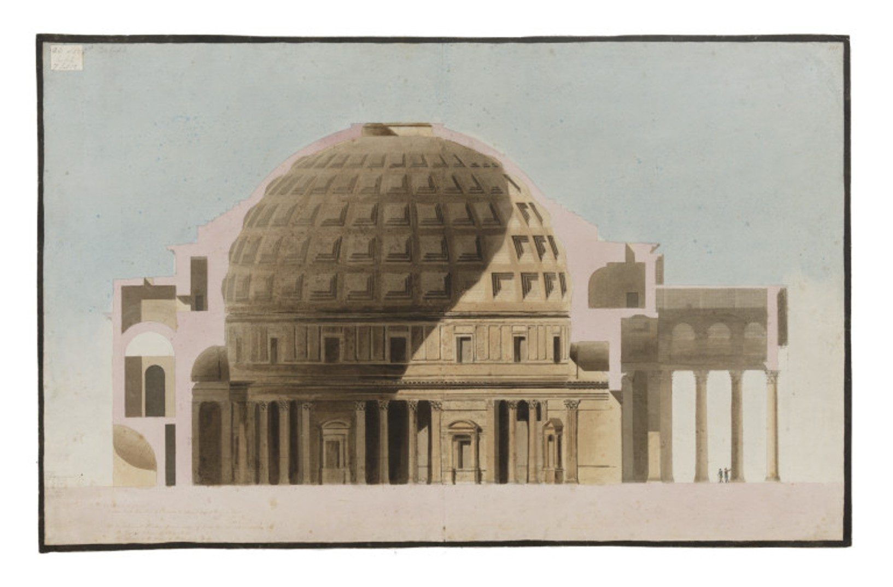
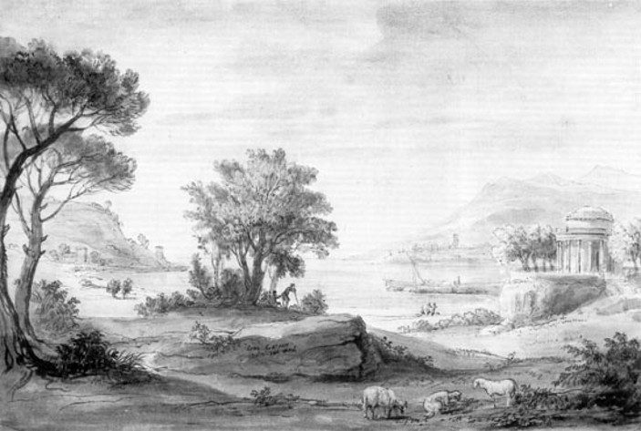
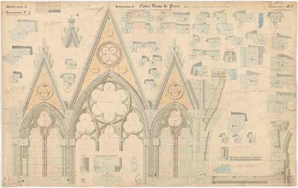
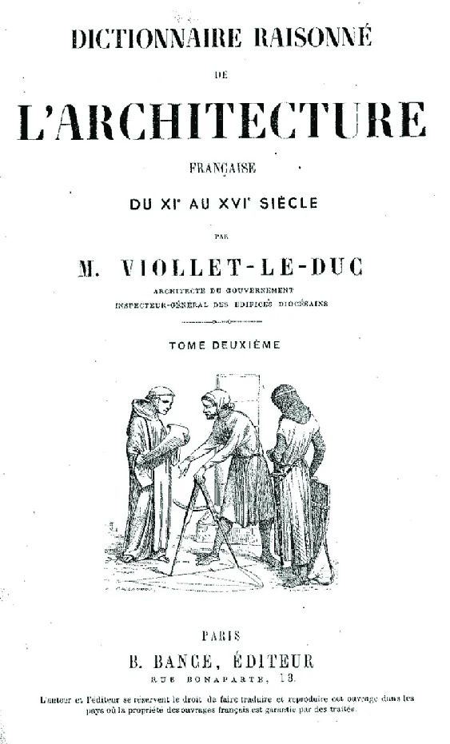

Proposed classification
Five types of architectural journey: classical, romantic, modern, vernacular and contemporary.
Classification criteria
Analysing the Grand Tour as an educational experience through Kolb’s experiential learning theory helps us understand how direct contact with architecture can contribute to the construction of knowledge and to the transformation of the architect’s gaze. When this transformation becomes especially significant in an architect’s career, the journey may become an initiatory experience. However, although these learning processes can be recognised in different periods, the motivations that drive architects to travel, the places they visit and the architecture that attracts their interest have changed considerably over the course of history.
These transformations make it possible to distinguish different ways of understanding and practising architectural travel. In order to identify and compare them, this thesis proposes a classification into distinct types, taking into account both the historical context in which they emerge and the characteristics that define them.
The proposal takes as its starting point the classification put forward by Gonçalves Diez in “Roma–Passaic–Las Vegas”. The author distinguishes two broad modes: the classical architectural journey, which began with the Renaissance humanists, was institutionalised in the Grand Tour of the seventeenth and eighteenth centuries and continued, with variations, well into the twentieth century; and the contemporary architectural journey, whose founding moment she places in the 1968 trip to Las Vegas. Within the first mode, she also describes the transition from the Enlightenment traveller to the romantic traveller and the attitude of modern architects.
Building on this interpretation, the present thesis proposes a more detailed classification, in which some of the modes described by Gonçalves Diez are developed as distinct types. Each emerges in a particular historical and cultural context, linked to the currents of thought and architectural interests of its time. The classification does not, however, seek to establish a succession of closed historical stages. The different types can coexist in the same period, and certain motivations or ways of approaching architecture can reappear at later moments. Chronology therefore helps to contextualise the types of journey, but is not in itself the criterion that defines them.
To characterise each type of architectural journey, five common criteria are established and applied consistently in the following sections:
Time frame and context: situates the emergence and development of each type of journey in its historical, cultural and architectural context, paying attention to the currents of thought and social transformations that help explain its characteristics. The time limits given correspond to the periods in which each type appears or becomes most relevant, and are not strict start and end dates.
Geography: identifies the main destinations and geographical areas of the journey, as well as their relationship with the architect’s place of origin and with the cultural and architectural circuits of each period.
Architecture of interest: describes the buildings, typologies, building traditions or urban settings that attract the traveller’s attention and constitute their main references for study.
Motivation: examines the reasons that drive the architect to travel, paying particular attention to their intellectual and educational concerns, the knowledge they seek to acquire and the questions that guide their approach to architecture.
Record: analyses the written, graphic and visual means used to document the journey, as well as the forms of observing, studying and interpreting architecture that they reveal. Both the characteristics of the documents produced and the traveller’s approach to what they observe are considered, whether analytical, subjective, constructive, anthropological or perceptual, among others.
These criteria make it possible to compare not only the destinations and objects of interest of the different types of journey, but also the motivations behind them and the ways of approaching architectural knowledge. In this sense, the classification incorporates the educational dimension of the journey developed earlier on the basis of Kolb’s experiential learning theory, especially with regard to direct experience and reflective observation. The aim is not to establish a correspondence between types of journey and phases of experiential learning, but to consider how different ways of travelling, observing and documenting architecture can contribute to that learning. How these experiences are transformed into architectural knowledge, and their possible influence on later production, will be analysed in the chapter devoted to the case studies.
Compared with Gonçalves Diez’s proposal, the classification introduces two main adaptations. On the one hand, it incorporates a type linked to an interest in vernacular architecture and in ways of building and dwelling outside the academic tradition, which the author hints at when referring to Aldo van Eyck’s journeys but does not develop as a category of its own. On the other, it broadens and refines the definition of the contemporary journey to accommodate motivations and objects of interest that go beyond the author’s characterisation.
The labels classical (or Enlightenment), romantic and contemporary journey are taken from Gonçalves Diez’s terminology, although the classical journey is used here in a narrower sense than hers; the labels modern journey and vernacular journey are this thesis’s own.
This classification provides a frame of reference for analysing the journeys selected for the research, identifying their characteristics and examining how motivations, interests and ways of approaching architecture have evolved. It also makes it possible to explore both the differences between journeys of different periods and the persistence of certain attitudes and goals over time.
The resulting classification is as follows:
The classical or Enlightenment journey
Time frame and context. This is the original type and essentially spans the seventeenth and eighteenth centuries, although it continued into the nineteenth through academic scholarships for residence in Rome. Its driving idea can only be understood within the framework of the Enlightenment: Enlightenment values spread among the well-to-do classes thanks to the Encyclopédie (from 1751) and the thought of authors such as Montesquieu, Rousseau and Kant. In the artistic landscape, the eighteenth century moved from the Rococo, a “hinge” style descended from the Baroque, towards Neoclassicism, firmly grounded in Enlightenment values and the rationalism of classical architecture.
Geography. This journey set out essentially from England. Young men left, accompanied by an older tutor —usually a clergyman or someone trusted by the family—, for France, then headed down into Italy and travelled through it, often as far as Naples and sometimes Sicily. After reaching a great city such as Rome or Naples, the young man would often stay on there and make the return journey on his own; this licence of freedom was a vote of confidence of an initiatory kind.
Architecture of interest. Classical and Renaissance architecture. The journeys made it possible to take clear references that were then reproduced, almost literally, in the travellers’ home countries, as shown by the Temple of Ancient Virtue that William Kent designed after the Temple of Vesta at Tivoli.
This interest in Antiquity was greatly boosted by the start of the excavations at Pompeii in 1748 and the confirmation, in 1763, that this was indeed the Roman city.
Motivation. The spirit of these journeys was to verify in person what had been studied in books, to broaden knowledge and to catalogue it in a relatively detached way. Enlightenment thought promoted a scientific approach to study, and the journey was conceived as a tool for collecting and verifying knowledge.
Record. Travel notebooks were written in an analytical tone, with objective notes on the buildings studied, accompanied by drawings that reproduced reality precisely: measurements were taken and academic drawing techniques were used.




The romantic journey
Time frame and context. The romantic journey mainly spans the nineteenth century, although its first features appear at the end of the eighteenth. Scientific curiosity turned into curiosity about the unknown, in which the traveller found a picturesque place in which to indulge and to find himself. As Gonçalves Diez sums it up:
“The Enlightenment traveller who comes to know the Other from a position of scientific superiority gives way to the romantic traveller who wants to know himself through confrontation with the unknown” (own translation)1.
These travellers benefited from cheaper transport, the expansion of the railway and the steamship, and the growing wealth of a middle class driven by the Industrial Revolution. In architecture, this was the period when John Ruskin’s theories of restoration2 spread across Europe, along with the opposing theories of Viollet-le-Duc3, giving new production an ideological component: the veneration of the ruin as an object of evocative value, in one case, or its complete restoration as an act that dignified the building, in the other. In this context styles such as the Gothic Revival, the Neo-Byzantine and eclecticism emerged, seeking their references in exotic architectures or in those neglected during the Enlightenment.
Geography. To the classical destinations were added others considered exotic or picturesque, such as Spain, with its Islamic heritage, or the Near East.
Architecture of interest. This curiosity drew travellers towards more exotic architecture and towards medieval architecture, until then disparaged by the neoclassicists in favour of classical and Renaissance architecture. Within the same exotic frame arose an interest in Islamic and even, in some cases, colonial architecture.
Motivation. The romantic traveller sought the experience of the strange and the picturesque rather than the verification of prior knowledge.
Record. Travel notebooks moved from objective writing to the memoir format. Travellers narrated their experiences in the first person and, besides making analytical notes, described their sensations. The notebook became a kind of illustrated diary in which architecture coexisted with everything that caught the traveller’s attention: dress, scenes, decorative patterns or vernacular landscapes. Drawing, without measurements, tended to depict buildings integrated into their surroundings.


not reproduced in the web version.


The modern journey
Time frame and context. The modern journey essentially took place during the first half of the twentieth century, in the context of the avant-gardes and the search for a new architectural language. It is the hybrid offspring of the classical and the romantic journey: Gonçalves Diez finds in Le Corbusier’s journeys of 1907 and 1911 the perfect example of this overlapping of interests.
Geography. The classical routes through Italy and Greece and the veneration of the monuments of Antiquity and the Renaissance were maintained, but journeys grew longer and included destinations in Germany, Eastern Europe and the Balkans, with the Near East —still largely under the Ottoman Empire at the beginning of the century— as the new culmination of the journey.
Architecture of interest. Alongside the classical, Greek and Roman monuments, notebooks began to include buildings such as Hagia Sophia or the pyramids of Egypt, landscapes such as the Bosphorus and picturesque corners of the Balkans, with a growing interest in vernacular architecture.
Motivation. The monument remained an object of study, but now as material for reflection towards a new language. In the words of Gonçalves Diez:
“The architects of modernity combined their interest in monuments, which allowed them to reflect on their desire to create a new style, with an attraction to the picturesque that became increasingly interested in vernacular architecture to the detriment of people” (own translation)4.
Record. From the romantic journey it inherited the memoir format, which describes experiences beyond scientific note-taking and includes accounts of encounters with people along the way, as happens constantly in Le Corbusier’s Journey to the East5. Drawing became more expressive: the precision of Enlightenment sketches gave way to freer strokes and more interpretive colours, seeking to capture not only objective reality but also the traveller’s sensations. To this was added photography, which began to share with drawing the task of recording the journey.
not reproduced in the web version.View at source ↗
The vernacular journey
Time frame and context. The vernacular journey, added to the classification as a contribution of this thesis, does not correspond to a specific chronology: journeys made throughout the whole period covered by this thesis can be considered within it, although it became widespread in the twentieth century thanks to the democratisation of transport and, especially, the spread of passenger flights. Its search for external influences continues the romantic spirit, but adds a distinguishing element: the attempt to break out of the European stylistic cycle, which tended towards self-reference through the repetition of historicist styles.
Geography. Its main characteristic is a complete departure from the architect’s geographical sphere of influence: these are usually journeys from the West to other cultures, in most cases outside Europe.
Architecture of interest. The interest centres on the vernacular and indigenous architecture of cultures other than the architect’s own, and on their ways of building and dwelling. Immersion is usually total, which gives the journey an important ethnographic and anthropological component.
Motivation. The architect seeks to steep himself in distant architectures and building methods that are hard to access in his home environment. The journey usually springs from a personal fascination, often sparked by encountering a book or a print in youth: such is the case of Frank Lloyd Wright with the Japanese prints imported into the United States, or of Utzon with the Yingzao Fashi, a Chinese building treatise of which a relative of the Danish architect owned a copy.
not reproduced in the web version.View at source ↗
Record. The temporal dispersion of this type of journey makes it difficult to describe a specific style of record, although, in general, the sketch increasingly coexists with photography. The examples considered range from drawings and diary entries to reports made exclusively with still and film cameras, as in the selected case study (Utzon, 1958).
not reproduced in the web version.View at source ↗
The contemporary journey
Note: relationship with Gonçalves Diez’s classification. This characterisation starts from the interpretation proposed by Gonçalves Diez, who places a decisive moment in the trip to Las Vegas made in 1968 by Robert Venturi, Denise Scott Brown and their collaborators, which would give rise to Learning from Las Vegas6. The author highlights the interest in understanding the contemporary city, its symbols and its forms of communication, as opposed to the search for traditional architectural models. The Las Vegas trip thus represents an approach in which ordinary architecture, popular culture and the analysis of the meanings of the urban environment take centre stage.
The present thesis proposes broadening this interpretation in two ways. On the one hand, it considers that the contemporary journey is not limited to a semiotic reading of architecture and the city, but can also incorporate phenomenological approaches, centred on the perception and lived experience of space. This sensibility, already present in the practice of some travellers, would later crystallise in architectural theory with authors such as Norberg-Schulz7 and Pallasmaa8. On the other, it holds that broadening the objects of interest does not necessarily mean abandoning historical architecture or the masterpieces of modernity, which can remain important destinations. From this perspective, the contemporary journey is characterised less by the places visited than by the diversity of questions and forms of interpretation with which the architect approaches them. The case of Tadao Ando, analysed later, will make it possible to explore this interpretation.
Time frame and context. The contemporary journey emerged in the 1960s, in a cultural context transformed by structuralism and semiotics, the phenomenology of perception, pop art and conceptual art, and by new ways of theorising the city, such as Kevin Lynch’s The Image of the City (1960). The veneration of ancient monuments was shared with that of the masterpieces of modernity, and understanding the city and the architecture of the present came to the fore, so that places outside academic circuits could arouse interest.
Geography. Easy access to contemporary means of transport (aeroplane, long-distance train, ocean liner) allows this journey to extend across the whole planet, although it tends to concentrate in the northern hemisphere (Ando’s return through Africa and India is, in this sense, an exception).
Architecture of interest. This journey retains the interest in the great landmarks of historical architecture, but adds as a distinguishing factor the veneration of buildings that were modern and contemporary at the time of the journey, unlike the previous types, which normally prioritised the architecture of the past.
Motivation. The motivations of the contemporary journey are diverse. According to Gonçalves Diez’s definition, it could be attributed a desire to understand complex architectural realities not previously studied in the academic sphere. However, with the broader view proposed in this thesis, the motivation also has a markedly “initiatory” character: that of equipping oneself with a set of architectural references of every kind to prepare the traveller for the start of professional practice.
not reproduced in the web version.View at source ↗
Record. Notes take on a more diagrammatic appearance: representation seeks to capture ideas rather than reproduce more or less exactly what is seen, and to convey the author’s idea as directly as possible, even if this requires abstraction. Detailed or analytical drawing is gradually replaced by photography and video: the compactness of the devices allows them to be carried on the journey and to obtain faithful images instantly, without having to reproduce them in the notebook.
The following table summarises the five types of journey according to the criteria described.
| Type | Time frame and context | Geography | Architecture of interest | Motivation | Record |
|---|---|---|---|---|---|
| Classical (Enlightenment) | 17th–18th centuries (continuing into the 19th with academic scholarships). Enlightenment and Neoclassicism. | England → France → Italy (Rome, Naples; sometimes Sicily). | Classical and Renaissance: ruins, orders, proportions. | To verify in person what was learned from books; to catalogue knowledge. | Objective notes and measured drawings, using academic techniques. The building is isolated from its surroundings. Analytical, scientific approach. |
| Romantic | Late 18th–19th centuries. Romanticism; Ruskin and Viollet-le-Duc; historicisms. | Classical destinations plus Spain and the Near East. | Medieval, Islamic and picturesque. | To seek the strange and the picturesque; to know oneself in the face of the unknown. | First-person diary describing sensations, sometimes in verse. Unmeasured sketches: the building in its landscape, alongside people and dress. Subjective, picturesque approach. |
| Modern | First half of the 20th century. Avant-gardes and the search for a new language. | Italy and Greece, plus Central Europe, the Balkans and the Ottoman Empire. | Classical monuments alongside Byzantine, Ottoman and vernacular architecture. | To use the monument as material for reflection in order to create something new. | Memoirs, free sketching and colour, and photography. Drawing studies composition, proportion, space and setting rather than refined detail. Mixed approach: analytical and sensitive. |
| Vernacular | Cross-period; widespread in the 20th century with air travel. A break with the European historicist cycle. | Outside one’s own cultural sphere, usually outside Europe. | The vernacular architecture of other cultures (not one’s own country’s): ways of building and dwelling. | Personal fascination, often born of a book or a print; seeking techniques absent from one’s own environment. | Sketches and photographs documenting building systems, materials, spatial organisation and the relationship between architecture and ways of life. Total immersion. Anthropological and constructive approach. |
| Contemporary | From the 1960s. Semiotics, phenomenology, pop art; new theories of the city. | Worldwide. | The city and architecture of the present, popular culture; also historical architecture and modern masterpieces. | To understand how today’s city works and is perceived; to experience space with the body. | Diagrams to read relationships and meanings, photography and video to document uses, drawing to explore spatial qualities. Semiotic or phenomenological approach. |